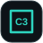

WEB APPLICATION • BUSINESS SYSTEM • DIGITAL SOLUTION
Membangun Sistem Digital yang Membuat Bisnis Bekerja Lebih Cerdas.
Saya M.Hilman Alfiqri, Web Application Developer yang berfokus membangun website, aplikasi bisnis, dashboard, sistem operasional, dan solusi digital yang disesuaikan dengan kebutuhan nyata sebuah bisnis.
Website • Web Application • Business System • PWA • Mobile Integration
Ringkasan Operasional
Dashboard Hari Ini
19 Agu
Aktivitas Operasional7 hari
Jadwal TerbaruLive
HAService ACKebayoranBerjalan
RFCuci ACCilandakTerjadwal
DNPerbaikanDepokSelesai
Aplikasi TeknisiJadwal Teknisi
Hari ini3 pekerjaan
Service AC09:00 • Kebayoran
Berjalan
Cuci AC13:00 • Cilandak
Berikutnya
Maintenance16:30 • Pancoran
Terjadwal
TrackingTeknisi di lokasi
InvoiceSiap dikirim
TENTANG SAYA
Tidak Sekadar Membuat Website. Saya Membangun Sistem yang Menyelesaikan Masalah Bisnis.
Saya mengembangkan solusi digital dengan pendekatan yang berangkat dari kebutuhan operasional bisnis. Mulai dari pengelolaan pelanggan, jadwal pekerjaan, teknisi, invoice, dashboard, autentikasi hingga integrasi aplikasi mobile, setiap fitur dirancang untuk membuat pekerjaan menjadi lebih terstruktur dan efisien.
Bagi saya, website yang baik bukan hanya terlihat menarik. Sistem tersebut harus mudah digunakan, relevan dengan alur kerja pengguna, dapat dikembangkan, dan benar-benar memberikan manfaat bagi bisnis.
Business-Oriented
Pengembangan dimulai dengan memahami kebutuhan dan alur kerja bisnis.
Custom Solution
Sistem dibuat berdasarkan kebutuhan aktual, bukan sekadar menggunakan template generik.
Scalable Development
Struktur aplikasi dirancang agar dapat terus dikembangkan mengikuti pertumbuhan kebutuhan bisnis.
KEAHLIAN
Teknologi untuk Membangun Solusi Bisnis Modern
Fokus utama saya adalah menghubungkan antarmuka, data, pengguna, dan workflow agar sistem benar-benar membantu pekerjaan sehari-hari.
Web Application Development
Membangun aplikasi web interaktif dengan workflow, database, dan autentikasi.
Business Management System
Membangun sistem untuk membantu mengelola proses operasional bisnis secara terpusat.
Responsive Interface
Antarmuka optimal untuk desktop, tablet, dan smartphone.
Database Integration
Menghubungkan aplikasi dengan database cloud untuk mengelola data bisnis.
Authentication & Access
Sistem login dan pembagian akses berdasarkan peran pengguna.
Dashboard Development
Dashboard untuk monitoring data dan aktivitas operasional.
Progressive Web App
Web application dengan pengalaman yang mendekati aplikasi native.
Mobile Integration
Integrasi web application dengan perangkat mobile menggunakan teknologi hybrid.
HTML5

CSS3 JavaScript Supabase PostgreSQL Vercel Capacitor PWA REST APIFEATURED PROJECT
LORHIL AC Management System
Sistem manajemen operasional digital untuk bisnis jasa servis AC.
OperasionalDashboard Bisnis
Aktivitas TerbaruStatus
Service AC • AndiBerjalan
Maintenance • BudiSelesai
Cuci AC • RinaTerjadwal
Perbaikan • DimasDiproses
Teknisi Mobile
09:00
13:00
Pekerjaan Hari Ini
Service ACKebayoran
Cuci ACCilandak
Tantangan
Operasional bisnis jasa membutuhkan pengelolaan pelanggan, teknisi, jadwal, pekerjaan, invoice, dan aktivitas lapangan yang saling terhubung. Ketika proses tersebut dilakukan secara terpisah, informasi menjadi lebih sulit dipantau dan berpotensi menyebabkan pekerjaan tidak terorganisir.
Solusi
LORHIL AC Management System dikembangkan sebagai pusat operasional digital yang menghubungkan admin, pelanggan, pekerjaan teknisi, invoice, jadwal servis, dan aktivitas lapangan dalam satu sistem.
Hasil
Sistem memberikan alur kerja yang lebih terstruktur, akses informasi yang lebih cepat, serta pengalaman penggunaan yang dapat berjalan melalui desktop maupun perangkat mobile.
FITUR UTAMA
Satu Sistem untuk Menghubungkan Operasional
Dashboard Operasional
Ringkasan aktivitas dan informasi penting bisnis.
Manajemen Pelanggan
Penyimpanan dan pengelolaan data pelanggan secara terpusat.
Manajemen Teknisi
Pengelolaan teknisi dan hubungan akun teknisi dengan sistem.
Jadwal Service
Pengaturan dan distribusi pekerjaan kepada teknisi.
Technician Mobile Access
Teknisi dapat mengakses jadwal dan pekerjaan melalui smartphone.
Location Workflow
Mendukung aktivitas teknisi berbasis lokasi saat menjalankan pekerjaan.
Invoice System
Pembuatan invoice terintegrasi dengan data layanan.
Role-Based Authentication
Hak akses berdasarkan jenis pengguna.
Cloud Database
Data operasional disimpan melalui database cloud.
Progressive Web App
Pengalaman aplikasi menggunakan teknologi web modern.
Android Integration
Web application dapat digunakan melalui aplikasi Android.
Update Management
Mendukung pembaruan dan pengembangan aplikasi secara bertahap.
HTML
CSS
JavaScript
Supabase
PostgreSQL
Vercel
PWA
Capacitor
REST API
PROJECT LAINNYA
Project & Eksperimen Lainnya
Business Dashboard
Dashboard modern untuk monitoring operasional, data, dan aktivitas bisnis.
Invoice & Administration System
Sistem administrasi digital untuk pengelolaan transaksi dan dokumen bisnis.
Mobile Business Application
Aplikasi mobile untuk membantu aktivitas pekerja lapangan dan operasional.
LAYANAN
Solusi Digital yang Bisa Saya Bangun untuk Bisnis Anda
Website Bisnis
Website profesional untuk menampilkan bisnis, layanan, informasi, dan identitas brand.
Custom Web Application
Aplikasi web yang disesuaikan dengan kebutuhan operasional bisnis.
Business Management System
Sistem untuk mengelola pelanggan, pegawai, teknisi, jadwal, pekerjaan, transaksi, dan workflow.
Admin Dashboard
Dashboard untuk membantu pemilik bisnis memonitor informasi penting.
PWA & Mobile Web App
Aplikasi berbasis web yang dioptimalkan untuk penggunaan melalui smartphone.
Custom Digital Solution
Solusi khusus bagi proses bisnis yang membutuhkan sistem di luar website standar.
CARA KERJA
Dari Permasalahan Bisnis Menjadi Sistem yang Siap Digunakan
Memahami Kebutuhan
Mempelajari bisnis, pengguna, masalah, dan workflow.
Perencanaan
Menentukan struktur sistem, fitur, database, dan pengalaman pengguna.
UI/UX
Merancang antarmuka yang mudah digunakan dan profesional.
Development
Mengembangkan fungsi aplikasi dan integrasi data.
Testing
Menguji fungsi, responsivitas, workflow, dan pengalaman pengguna.
Deployment
Mempublikasikan aplikasi agar dapat digunakan secara online.
Pengembangan
Mengembangkan sistem lebih lanjut berdasarkan kebutuhan berikutnya.
NILAI KERJA
Kenapa Membangun Sistem Bersama Saya?
Berorientasi pada Kebutuhan Bisnis
Fitur dibangun berdasarkan masalah yang benar-benar perlu diselesaikan.
Custom, Bukan Sekadar Template
Struktur aplikasi dapat disesuaikan dengan workflow bisnis.
Desktop & Mobile Ready
Antarmuka responsif untuk berbagai perangkat.
Modern Cloud Technology
Menggunakan teknologi web modern untuk membangun aplikasi yang dapat berkembang.
Fokus pada User Experience
Sistem harus mudah dipahami oleh pengguna, bukan hanya berjalan secara teknis.
Continuous Improvement
Produk digital dapat terus dikembangkan mengikuti kebutuhan.
PUNYA IDE ATAU MASALAH BISNIS?
Mari Ubah Proses Bisnis Anda Menjadi Sistem Digital yang Lebih Efisien.
Ceritakan bagaimana bisnis Anda bekerja dan masalah yang ingin diselesaikan. Saya akan membantu menerjemahkannya menjadi solusi digital yang sesuai.
KONTAK
Mari Terhubung
Terbuka untuk project website, web application, business management system, dashboard, PWA, aplikasi operasional, dan pengembangan solusi digital khusus.
WhatsApp
Chat WhatsApp
+62 878-7241-2014
Jalur utama untuk berdiskusi tentang kebutuhan, alur kerja, dan ruang lingkup project.
Email
Kirim Email
hilmanalfiqri01@gmail.com
Gunakan email untuk kebutuhan yang memerlukan brief, dokumen, atau pembahasan lebih formal.